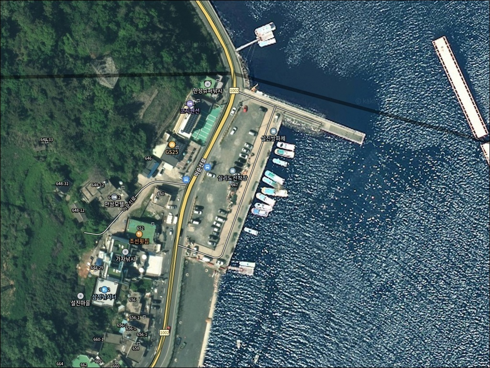
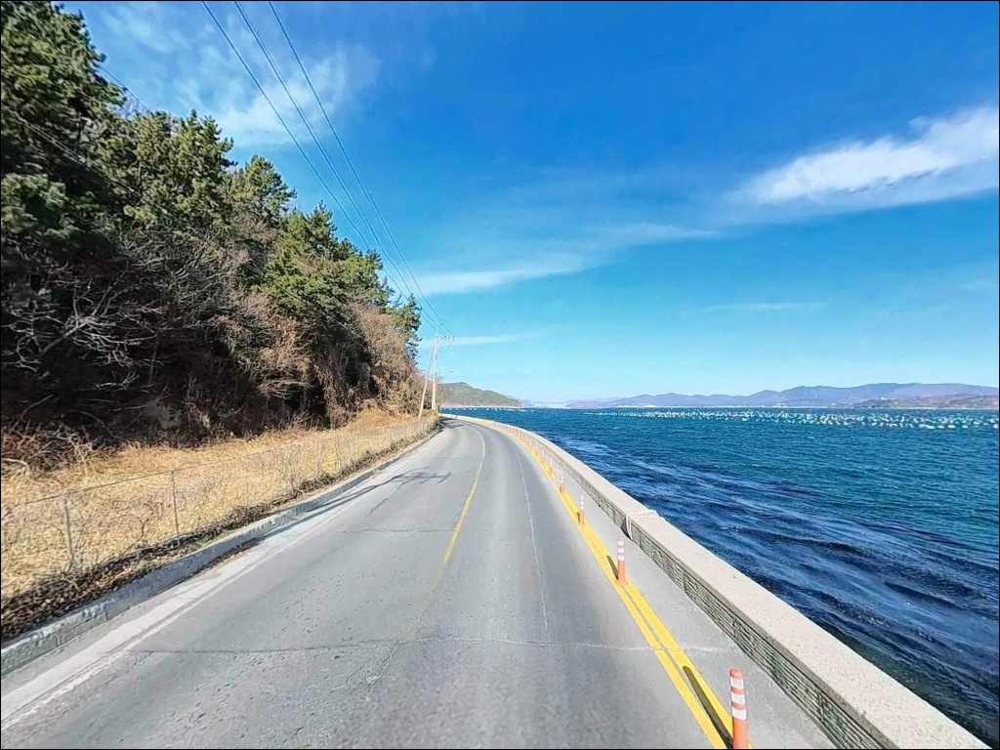
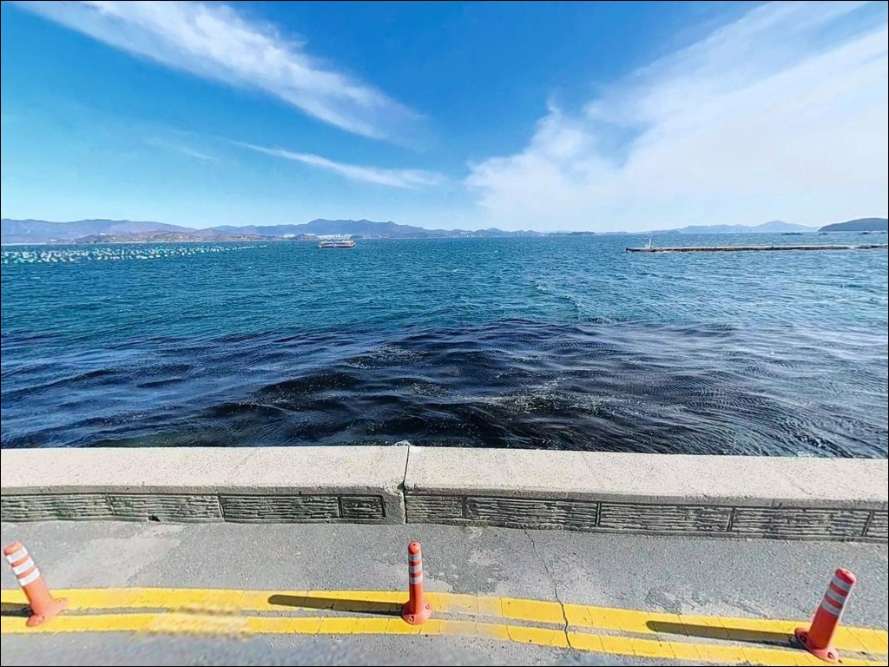
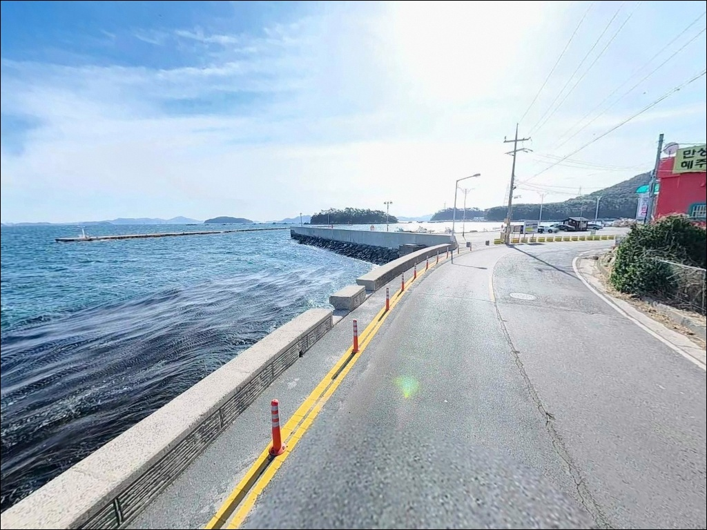
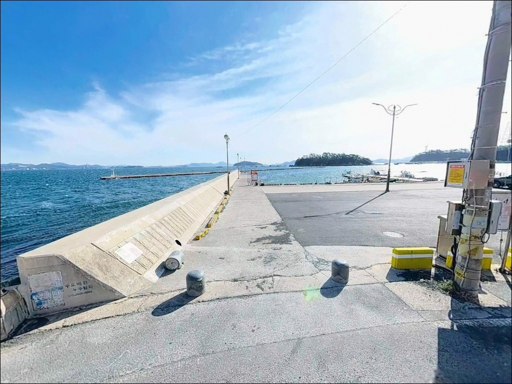
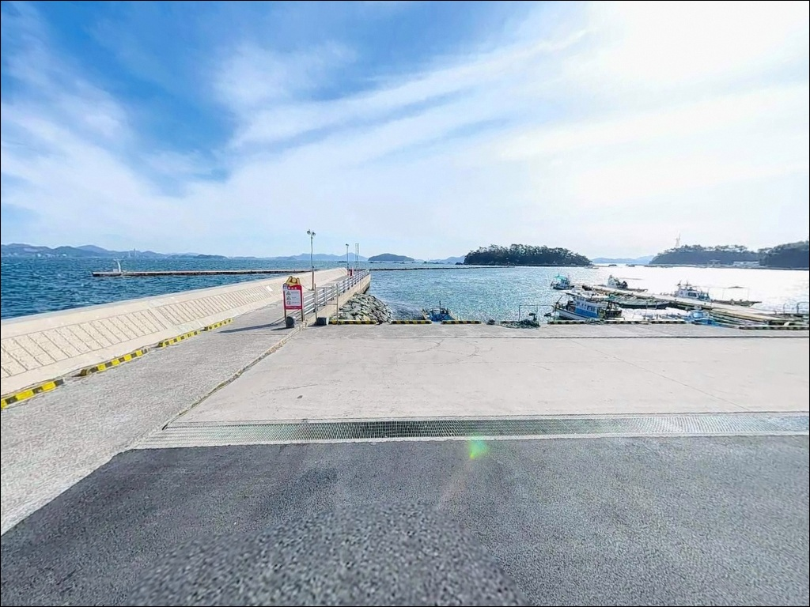
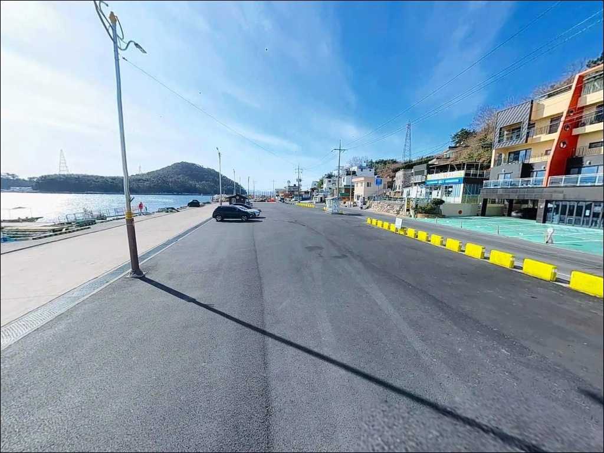
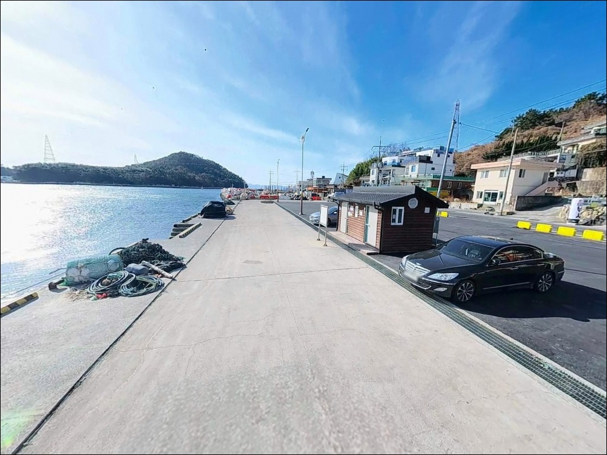
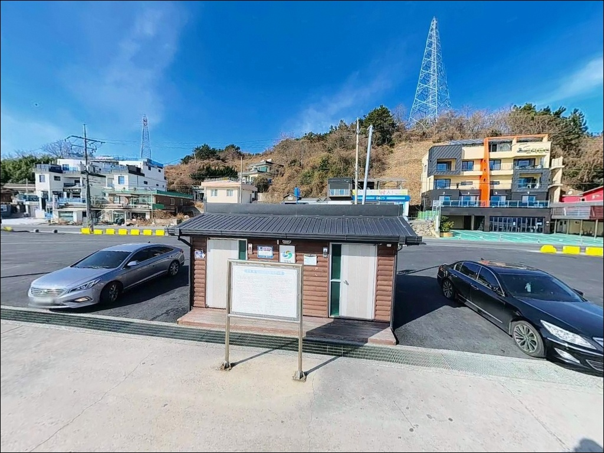

외항 조류 세질 때, 설진방파제 원투낚시 수심 7m 끝단에서 맞춘 입질
이 페이지에는 광고(제휴 링크 포함)가 있으며, 광고 링크를 통해 구매하면 운영자가 판매 수익 또는 수수료를 받을 수 있습니다. 포인트 사진: 카카오맵 스카이뷰·로드뷰. 이 페이지의 지도·사진 이미지는 카카오맵의 실제 서비스 이미지와 다를 수 있습니다.


포인트 안내
설진방파제
경남 창원시 마산합포구 구산면 심리 2-8
설진방파제에서 외항과 내항 자리를 구분하지 않고
무작정 자리를 펴면,
조류가 흐르는 외항 본류대를 놓친 채
잔잔한 내항 쪽에서 입질을 기다리는
상황이 생깁니다.
방파제 방향이 실리도 쪽으로 열려 있어
외항 본류대와 내항 정온수역의 차이가
뚜렷한 구조입니다.
원전항 권역 동쪽 진입부에 자리한 설진방파제는
방파제 끝단이 실리도 앞 해역을 정면으로 향합니다.
섬과 육지 사이 수로에서 조류가 형성되고,
외항 방향 수심은 7~8m 안팎으로
방파제 길이 대비 수심 확보가 안정적입니다.
이 글은 설진방파제의
진입 동선·차박 여건·낚시 지형 분석·
낚시 방식별 공략 조건에 집중합니다.
조황 단정이나 특정 어종 보장은
이 글의 범위에 포함되지 않습니다.

1. 진입 동선과 포인트 접근성
설진방파제는 이순신로 해안도로를 따라
차량 진입이 가능합니다.
심리교차로에서 해안도로로 진입하면
포장 구간이 이어지며,
방파제 직전 구간만 소로 수준으로 좁아집니다.
왕복 2차선 구간이 대부분이어서
대형 SUV도 접근에 큰 무리는 없는 편입니다.
방파제 입구에 주차 공간이 마련되어 있고,
선착장 인접 공터도 활용 가능합니다.
방파제 앞에서 회차가 가능한 구조여서
막다른 진출 걱정은 없습니다.
주말 낚시 성수기에는 주차 자리 확보를 위해
조기 도착이 기본 조건입니다.
방파제 주차장 맞은편에는
GS25와 낚시용품점을 겸하는 편의점이
24시간 운영됩니다.
채비·미끼·음료를 현장에서 바로 해결할 수 있어
도심 낚시터 수준의 접근 편의성을 갖추고 있습니다.

2. 차박 환경과 야간 체류 여건
설진방파제는 생활형 어촌 항구 특성상
차박보다는 낚시 후 단기 체류 개념에 가깝습니다.
방파제 입구 주차 공간이 낚시 접근성과
직결되어 있어, 주차 후 바로 낚시가 가능한 구조입니다.
GS25 조명과 이순신로 해안도로 가로등이
야간에도 밝은 편이어서
야간 낚시 환경은 상대적으로 양호합니다.
심리마을 주거지가 방파제 북쪽에 인접해 있어
민가 영향권 안에 있는 포인트입니다.
완전한 고립형 노지 차박보다는
생활 인프라와 함께하는 단기 체류에 적합하며,
야간 취사나 장박 운영은
현장 안내문 확인이 먼저입니다.
2024년 9월 주차장법 개정에 따라
공영주차장 내 야영·취사·불 피우기가
법적으로 금지되었습니다.
방파제 주차 공간이 공영주차장에 해당하는지
출발 전에 창원시 또는 현장 안내문을 통해
반드시 확인해야 합니다.


3. 주변 편의시설 및 인프라 현황
방파제 주차장 맞은편에 GS25와 낚시용품을 함께 취급하는
편의점이 24시간 운영됩니다.
원전항 권역 내에는 CU 마산원전점도 위치해 있어
음료·식품·기본 낚시 소품 조달은
현장에서 바로 해결이 가능한 수준입니다.
반경 3km 이내에는 심리장어 식당이 있어
출조 전후 식사 동선 활용이 가능합니다.
이순신로 해안도로 기준으로
원전항 일대에 생활 인프라가 집중되어 있습니다.
응급 상황 시 창원 시내까지 거리가 있으므로
비상약품과 충분한 수분은 출발 전에 갖춰야 합니다.
원전항 어항 권역 안이라 선박 안전 시설은 갖추어져 있지만,
개인 구급용품은 별도로 준비하는 것이 기본입니다.

4. 방문 전에 챙겨야 할 준비사항
설진방파제는 실리도 방향 남향 개방 해역으로,
남풍·남서풍이 강한 날에는
파도와 바람 영향을 직접 받는 구조입니다.
출발 전 기상청 해상예보와 바다타임 파고 정보를
반드시 확인하고,
바람 방향이 남계열일 때는 진입 판단을 다시 해야 합니다.
방파제 끝단과 꺾임 구간은 조류가 강하게 흐르는 자리입니다.
발판 상태에 따라 미끄러움이 있을 수 있어
구명조끼 착용이 기본 조건입니다.
야간 낚시를 계획한다면
헤드랜턴을 별도로 준비하는 편이 안전합니다.
원전항 어항구역 안에 위치한 포인트여서
어선 이동 동선과 어구 배치를 피해 자리를 잡아야 합니다.
채비 손실이 잦은 방파제 끝단 공략을 계획한다면
여분 채비를 넉넉하게 준비하는 것이
현장 운용을 편하게 만들어 줍니다.

5. 낚시 조과를 바꾸는 지형 판단 기준
설진방파제의 외항은 실리도 방면 개방 해역으로 연결되어
조류 흐름이 일정하게 형성되는 구간입니다.
수심은 외항 방향 끝단 기준으로
7~8m 안팎으로 확보되며,
방파제 끝단과 꺾임 구간 사이에서
조류 방향 변화가 뚜렷하게 나타나는 편입니다.
이 구간이 루어와 원투 모두에서 1차 공략 자리가 됩니다.
내항 쪽은 항내 정온 구역으로 수심이 상대적으로 얕고
조류 영향도 적습니다.
발판이 비교적 편해 가족 단위 원투 낚시에는 적합하지만,
조류를 활용하는 루어·에깅 공략은
외항 방향으로 자리를 잡는 것이 기본 전략입니다.
방파제 주변 해역에는 인근 양식장 영향으로
먹이 활동이 발생하는 구간이 형성됩니다.
베이트 어군이 회유할 때는 방파제 외항 쪽 본류대에서
피딩이 발생하는 구조입니다.
이 포인트는 베이트 회유 타이밍과 조류 방향이
조과를 결정하는 핵심 변수입니다.
최신 조황은 출조 전에 반드시 검색해 보시기 바랍니다.


6. 지형에 어울리는 낚시 스타일
외항 방향 원투낚시는 이 포인트에서
가장 안정적으로 운용 가능한 방식입니다.
청갯지렁이 편대채비를 방파제 끝단 외항 방향으로
멀리 투척하면 바닥 어종을 노리기 좋은
수심 조건이 갖춰집니다.
도다리·붕장어·우럭류가 기대할 수 있는 어종이며,
정조 타이밍 전후를 노리는 편이 효과적입니다.
루어낚시는 베이트 회유 시즌을 기준으로
미노우나 메탈 계열 채비로
외항 본류대를 가로지르는 방식이 이 포인트에 맞습니다.
고등어·전갱이·삼치 등 회유성 어종이
베이트를 따라 움직이는 패턴이 형성되는 구간으로,
베이트 떼가 확인될 때가 집중 공략 타이밍입니다.
에깅은 야간 방파제 외항 라인 공략이
이 포인트 지형에 잘 맞는 방식입니다.
갑오징어·무늬오징어 모두 기대 가능한 구간이며,
방파제 발밑부터 끝단까지 천천히 탐색하는 방법이
기본 공략 순서입니다.
릴찌낚시는 조류가 적당히 흐르는 타이밍에
발밑 근거리 흘림으로 감성돔을 노리는 방식이 맞습니다.

7. 대안 포인트와 플랜 B 동선
설진방파제가 혼잡하거나 바람 영향이 강할 때는
서쪽 약 500m 거리의
원전항 본 방파제(서방파제)가 첫 번째 대안입니다.
전체 길이 250m 직선+꺾임 구조로
끝단 등대 콧부리 주변이 핵심 자리이며,
외항 수심 7~8m로 원투·루어·릴찌낚시 모두 운용이 가능합니다.
구산면 수정리 방파제는 원전항에서
해안도로를 따라 북쪽으로 이동하면 닿습니다.
수심 4~5m 내외로 얕지만
야간 가로등이 있고 조류 소통이 안정적입니다.
3~4인 소규모 출조에 적합한 규모이며,
설진방파제와 같은 해역 조류를 공유합니다.
차박 대체 후보로는 구산면 이순신로 해안도로 구간 중
저도 연육교 인근 여유 공간이 검토됩니다.
전면 해역 조망과 낚시 접근성을 동시에 갖추고 있지만,
이 역시 야영 가능 여부를 현장에서 먼저 확인해야 합니다.

외항 자리 하나가 결정하는
설진방파제 조과의 전부
루어낚시와 원투낚시를 함께 즐기는 낚시인이라면
설진방파제의 지형 구조는 잘 맞습니다.
외항 본류대와 내항 정온수역이 뚜렷하게 나뉘어 있어
방식에 따라 자리를 다르게 잡는 것이
이 포인트를 제대로 쓰는 방법입니다.
에깅을 병행하고 싶다면 야간 방파제 외항 라인이
가장 효율적인 공략 구간입니다.
반면 남풍이 강한 날이나 사리 전후 조류가 세질 때는
외항 끝단 발판이 위험할 수 있습니다.
기상 확인과 구명조끼 착용은
출조 전 기본 조건으로 갖추고 가야 합니다.
베이트 회유 타이밍을 맞추고
외항 자리를 선점하는 것,
이것이 설진방파제에서 조과를 결정짓는 판단입니다.
GS25가 24시간 바로 옆에 있는 포인트라
채비 부족을 현장에서 채울 수 있고,
낚시 후 조용히 하룻밤 머물고 싶다면
야영 가능 여부 확인 한 가지만 선제적으로 처리해 두면
낚시와 차박을 동시에 즐길 수 있는 동선이 완성됩니다.